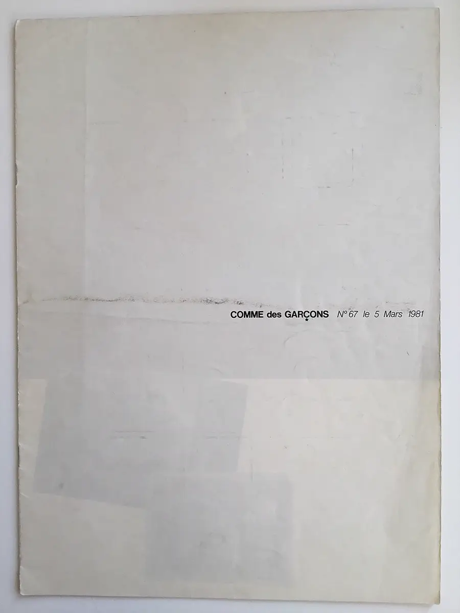
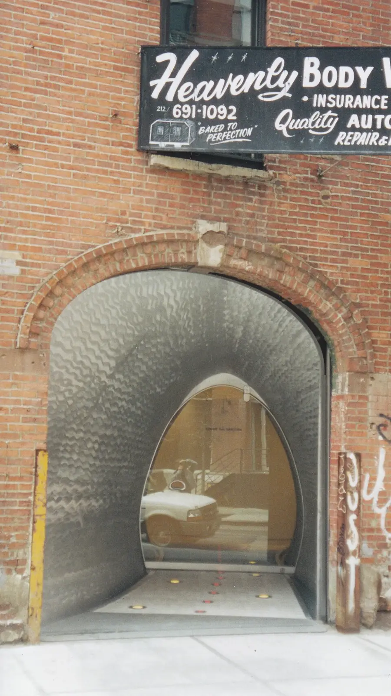

대표 로고대표 브랜드 마크
대표 로고대표 브랜드 마크꼼데가르송 Comme des Garçons
꼼데가르송(Comme des Garçons)은 1969년 도쿄에서 여성의류로 시작해 1973년 일본에서 설립된 의류 업체이다. 프랑스어로 '소년들처럼'이라는 뜻의 이름을 쓴다.
최종 업데이트
꼼데가르송은 어떤 브랜드인가
꼼데가르송은 레이 가와쿠보가 시작한 일본의 의류 브랜드이다. 유행의 선도자가 되는 것을 목표로 하는 컬렉션 부문과 눈 달린 하트로 대표되는 캐주얼한 PLAY 부문을 주축으로 영향력을 넓히고 있다.
현재 12개의 부티크와 전 세계 약 200여 개의 매장을 가진 기업이다. 회사의 로고인 하트 마크는 동료 디자이너가 봉투에 낙서한 것을 보고 디자인에 차용하기 시작했다고 한다.
처음에는 레이 가와쿠보의 개인 디자이너 브랜드였으나, 수석 디자이너 4명이 각각 1개 이상의 라인을 맡는 공동 수석 디자이너 브랜드의 형식이 되었다. 한국에서는 서울특별시 용산구 한남동 한강진역 일대에 최초의 플래그십 스토어가 문을 열었다.
꼼데가르송은 어떻게 시작되고 성장했나
1969년 도쿄에서 여성의류로 시작한 꼼데가르송은 1973년부터 본격적인 단일 기업으로 등장했다. 처음에는 레이 가와쿠보의 개인 디자이너 브랜드로 시작했다.
창의적인 디자인으로 1970년대에 크게 주목받던 이 브랜드는 1978년 남성 라인을 추가하며 더욱 성장했다. 1981년에는 프랑스 파리에서 데뷔 무대를 가졌고 독특한 디자인을 선보였다.
시간이 지나면서 소속 디자이너였던 준야 와타나베, 구리하라 다오, 간류 후미토를 수석 디자이너로 임명해 총 4명의 수석 디자이너가 각각 1개 이상의 라인을 맡게 되었다.
꼼데가르송의 브랜드 아이덴티티는 무엇인가
레이 가와쿠보가 시작해 여러 수석 디자이너가 각자 라인을 맡는 공동 수석 디자이너 체제와 눈 달린 하트의 PLAY 라인으로 알려진 일본 브랜드이다.
꼼데가르송의 대표 제품과 서비스는 무엇인가
레이 가와쿠보 부문에는 메인 여성의류 라인 Comme des Garçons(1973), 메인 남성 의류 라인 Comme des Garçons Homme Plus(1984), 셔츠 전문 라인 Comme des Garçons SHIRT(1988)가 있다. Play Comme des Garçons는 캐주얼 스트리트웨어를 지향하는 유니섹스 라인으로 하트 로고가 트레이드마크이며, 뉴욕의 그래픽 아티스트 필립 파고스키(Filip Pagowski)가 디자인했다.
준야 와타나베 부문에는 Junya Watanabe Comme des Garçons(1992), 구리하라 다오 부문에는 Tricot Comme des Garçons, 간류 후미토 부문에는 Ganryu Comme des Garçons가 있다. 액세서리로는 향수 Comme des Garçons Parfum(1994)과 주얼리 Comme des Garçons Pearl(2006)이 있으며, Speedo, Hammerthor와의 협업 라인도 선보였다.
꼼데가르송은 지금 어떤 상태인가
현재 12개의 부티크와 전 세계 약 200여 개의 매장을 가지고 있다. 플래그십 스토어는 도쿄, 교토, 오사카, 파리, 런던, 베이징, 홍콩, 뉴욕 등에 있다.
한국에는 한남동 한강진역 일대에 최초의 플래그십 스토어가 열려 13개 라인을 동시에 만날 수 있게 되었고, 이 일대는 '꼼데가르송길'로 이름이 바뀌었다.
꼼데가르송 로고는 어떻게 변해왔나
대표 로고대표 브랜드 마크사진으로 보는 꼼데가르송의 역사


자주 묻는 질문
꼼데가르송는 어느 나라 브랜드인가요?
꼼데가르송는 일본의 패션·럭셔리 브랜드입니다.
꼼데가르송는 언제 설립되었나요?
꼼데가르송는 1969년 설립되었습니다.
꼼데가르송의 브랜드 아이덴티티는 무엇인가요?
레이 가와쿠보가 시작해 여러 수석 디자이너가 각자 라인을 맡는 공동 수석 디자이너 체제와 눈 달린 하트의 PLAY 라인으로 알려진 일본 브랜드이다.
꼼데가르송의 대표 제품은 무엇인가요?
레이 가와쿠보 부문에는 메인 여성의류 라인 Comme des Garçons(1973), 메인 남성 의류 라인 Comme des Garçons Homme Plus(1984), 셔츠 전문 라인 Comme des Garçons SHIRT(1988)가 있다.
꼼데가르송는 현재 어떤 상태인가요?
현재 12개의 부티크와 전 세계 약 200여 개의 매장을 가지고 있다.
꼼데가르송의 창업자는 누구인가요?
꼼데가르송의 창업자는 카와쿠보 레이입니다(위키데이터 기준).
꼼데가르송의 본사는 어디에 있나요?
꼼데가르송의 본사는 도쿄에 있습니다(위키데이터 기준).
출처와 검증
꼼데가르송 관련 참고: 공식 웹사이트 · 위키데이터 Q1115170 · 한국어 위키백과 · 영어 위키백과. 브랜드명은 한글과 원어를 함께 표기하되 데이터에 없는 표기는 만들지 않습니다. 기원 국가·설립연도는 검수된 정의문에서 확인된 값을 우선하고, 없을 때만 공식 웹사이트 URL이 일치하는 위키데이터 개체의 값을 씁니다. 웹 첫 보관은 인터넷 아카이브가 공식 사이트 첫 화면을 처음 보관한 날로, 사이트 개설일과 다를 수 있습니다. 위키데이터 값은 2026-10-18 기준입니다.